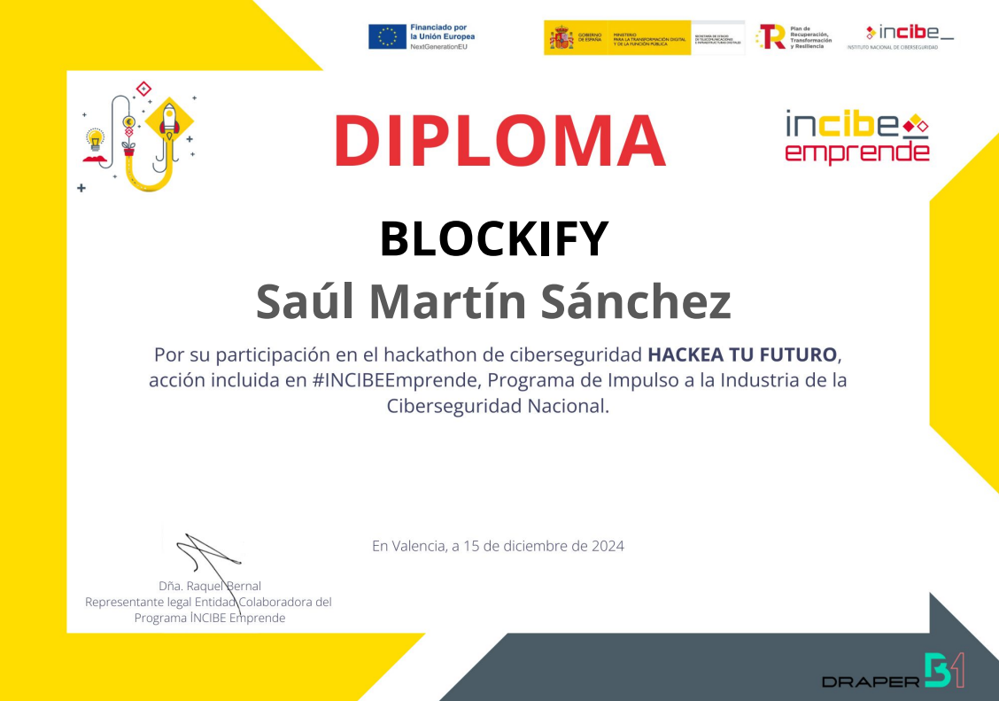
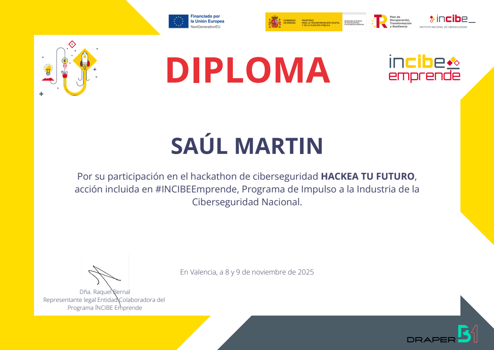

¿Quién es
Saúl Martín Sánchez?
Soy una persona proactiva, sociable y enfocada en el área IT. Tras finalizar SMR y continuar mis estudios en ASIR, he desarrollado una base sólida en administración de sistemas y ciberseguridad, especialmente orientada al entorno Blue Team. Destaco en la implementación y configuración de sistemas, así como en el análisis y la protección de entornos digitales. Mi objetivo es crecer profesionalmente en el ámbito de la ciberseguridad, aportar soluciones efectivas y seguir desarrollándome en un sector en constante evolución.
Finalista en el Hackathon de Ciberseguridad: Hackea tu futuro 2024 – INCIBE
Ganador del Hackathon de Ciberseguridad 2025 – INCIBE
2º Premio del Jurado en Girls4STEM – Universidad de Valencia (UpSteam)